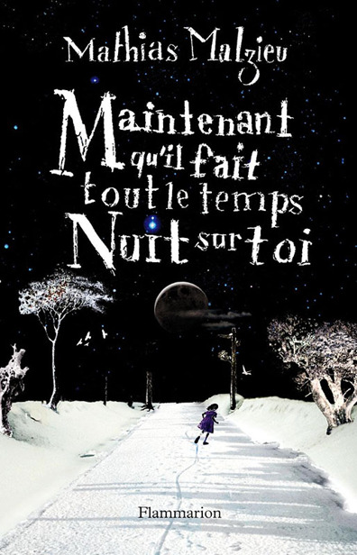
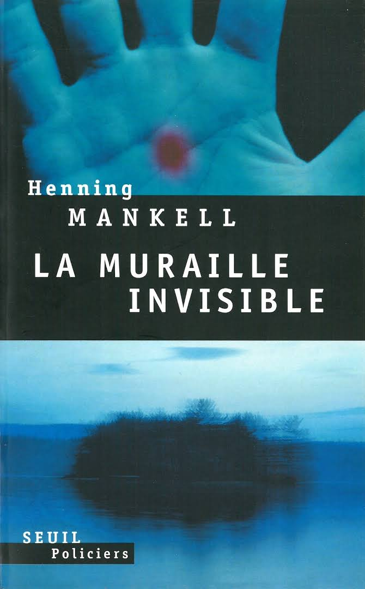
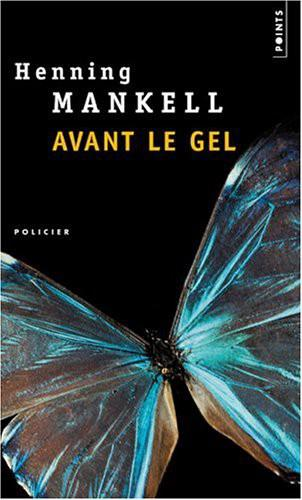

Le Choix d'Astar
#science-fiction
Le Rocher de Tanios
#roman
Samarcande
#roman-historique
Le Mangeur de livres
#roman
La Condition humaine
#roman

Maintenant qu'il fait tout le temps nuit sur toi
#roman
La Mécanique du cœur
#fantastique
Métamorphose en bord de ciel
#roman
Une sirène à Paris
#roman
La Faille souterraine et autres enquêtes
#roman-policier
Meurtriers sans visage
#roman-policier
Les Chiens de Riga
#roman-policier
La Lionne blanche
#roman-policier
L'Homme qui souriait
#roman-policier
Le Guerrier solitaire
#roman-policier
La Cinquième femme
#roman-policier
Les Morts de la Saint-Jean
#roman-policier

La Muraille invisible
#roman-policier

Avant le gel
#roman-policier
Une main encombrante
#roman-policier